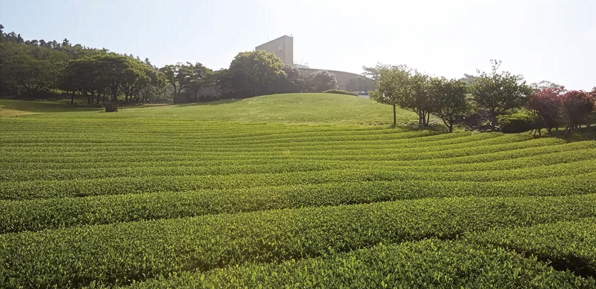
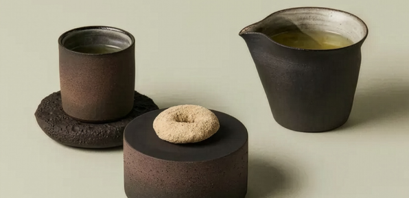
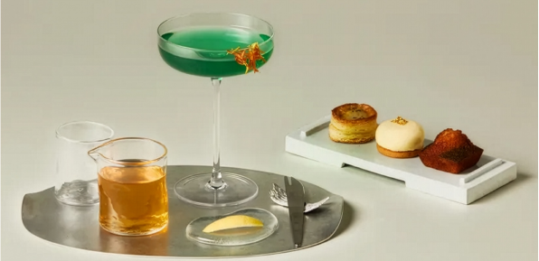
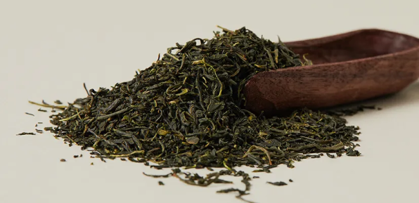

min
오설록의 상징인 끝없이 펼쳐진 서광차밭과 정원을 전문 도슨트의 안내와 함께 거닙니다.
제주의 맑은 공기와 흙 내음을 맡으며 일상의 소란함을 잠시 내려놓는 '쉼'을 경험해 보세요.

min
제주 유배 시절 추사 김정희 선생이 즐기던 차 문화를 현대적으로 재해석했습니다.
절제미가 돋보이는 다구로 차를 우려내며, 느림의 미학이 주는 마음의 여유를 느껴보세요.

min
제주의 제철 원물과 차를 조합한 칵테일과 어우러지는 수제 가니시 3종을 페어링합니다.
차의 무한한 변신을 맛보고, 입안 가득 퍼지는 화려한 색감과 맛의 조화를 경험해 보세요.

min
지속 가능한 지구를 위하는 오설록의 유기농 재배 방식과 환경 보호 메시지를 공유합니다.
유기농 차 한 잔을 마시며, 자연과 인간이 공존하는 미래를 그려보며 여정을 마무리합니다.
하루 4회 예약제로 운영되며, 회차별 입장 인원은 쾌적한 체험을 위해 제한됩니다.
가든투어부터 티 페어링까지 총 80분 내외로 진행됩니다.
차 문화와 제주의 자연을 천천히 경험하고 싶은 모든 방문객에게 열려 있습니다.
시음 티, 계절 가니시, 도슨트 해설, 지속 가능 메시지를 담은 작은 기념품이 제공됩니다.
제주의 바람과 차나무가 맞닿는 첫 공간입니다. 코스의 시작점으로 가볍게 산책하며 몸과 마음을 낮춥니다.
차를 우리고 마시는 행위에 집중할 수 있도록 설계된 프라이빗 공간입니다.
오설록 차의 원료가 자라는 풍경을 바라보며 지속 가능한 재배의 의미를 이해합니다.
방문일과 원하는 시간대를 선택합니다. 주말과 공휴일은 조기 마감될 수 있습니다.
회차별 정원이 제한되어 있어 동행 인원을 미리 확인해 주세요.
정시 진행을 위해 시작 10분 전 티뮤지엄 안내 데스크에 도착해 주세요.